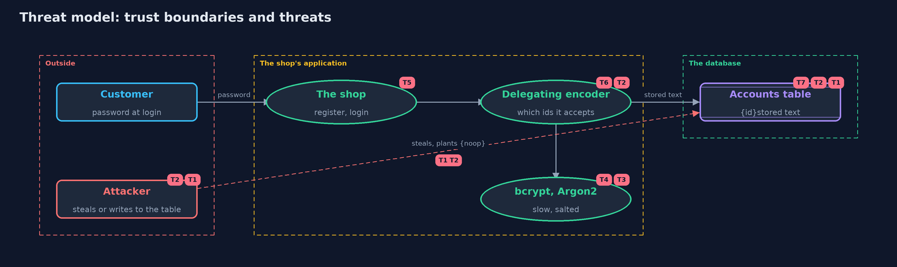

Threat Model — Password Hashing with Spring Security Crypto
A threat model answers four questions: what are we protecting, who or what could harm it, how, and what do we do about it. This one covers this project's own demo system, not a production deployment. Domain: an online store.
Scope
The part of an online store that stores and checks customer passwords using Spring Security's password encoders: the default delegating encoder, four algorithms, a migration to a new default, and an allow-list. It covers a stolen table, a planted value, and the cost of the algorithms. It does not cover how passwords reach the server or how logins are rate limited.
What we protect (assets)
- Customers' passwords, often reused elsewhere.
- The accounts table of stored texts.
- The login check, which spends time and memory on every attempt.
- The list of algorithms the shop agrees to accept.
Who and what acts on the system
- Customers, with passwords of every strength.
- An attacker who steals a copy of the table and guesses offline.
- An attacker who can write to the table and plant a value.
- A developer who builds the encoder, and may choose the default list.
Trust boundaries
A trust boundary is a line that data or a request crosses between parts that trust each other differently. Threats cluster where those lines are.
- Application to database: where the stored text is written and read.
- Stored text to encoder: the name in braces decides which code runs, so it is an input from the table.
- Database to the outside: the line a thief crosses when the table is copied.

Each dashed box is a trust boundary. A rose tag such as T1 shows where the threat of that number, in the table below, applies.
Threats, using STRIDE
STRIDE is a checklist of six kinds of threat: Spoofing (S), Tampering (T), Repudiation (R), Information disclosure (I), Denial of service (D), Elevation of privilege (E).
| Id | Kind | Threat | Where it shows up | Control in this project | What is left |
|---|---|---|---|---|---|
| T1 | Information disclosure | The accounts table is stolen and the passwords are readable or cheap to guess | PlainTextEncoder, FastSaltedSha256Encoder |
Use a slow, salted algorithm: bcrypt, PBKDF2, scrypt or Argon2 | Weak passwords on the attacker's list still fall |
| T2 | Elevation of privilege | A value such as {noop}letmein is planted in the table and accepted | the default DelegatingPasswordEncoder |
Build the delegating encoder from an explicit allow-list of ids | Anyone with write access can still swap one valid hash for another; protect the table |
| T3 | Information disclosure | Offline guessing against a stolen bcrypt or Argon2 hash | BCryptPasswordEncoder, Argon2PasswordEncoder |
Cost: bcrypt cost 10 is 1,024 rounds; Argon2 uses 16 MiB, two passes | Weak passwords fall; settings must be raised as hardware improves |
| T4 | Denial of service | Many simultaneous logins exhaust memory, because Argon2 needs 16 MiB each | Argon2PasswordEncoder |
None here; the memory per login is shown | Rate limits and a cap on concurrent hashing are needed |
| T5 | Denial of service | Wrong logins load the server, because every check is slow | matches |
None here | Rate limits and lockouts; the next project covers them |
| T6 | Tampering | An old algorithm is left in use after the default changes | upgradeEncoding |
The stored text is replaced after the next correct login | Customers who never log in keep their old hash |
| T7 | Information disclosure | The format of the stored text reveals the algorithm and settings | the accounts table | None needed: security does not depend on hiding the algorithm | It tells an attacker how costly guessing is, which is why the cost must be high enough |
Assumptions
- The typed password reaches the server over a protected channel.
- Only the application and administrators can write to the accounts table, except in the planted-value act, which supposes otherwise.
- Library versions are kept up to date, because the algorithms' recommended settings change.
Out of scope
- Rate limiting and lockout: the next project covers online guessing.
- Password policy, breached-password checks and password managers.
- Spring Security's login filters.
- Hardware security modules and peppers.
How the tests check this
EncodersTestchecks every algorithm, the visible settings, the migration and the planted value.AttackerTestshows the weak passwords fall in 24 guesses and the strong one survives.DemoRunsTestcompares the whole demo with the golden output.
Where this model goes next
The next project, password-attacks-and-defences, moves from offline guessing to online guessing: rate limits, lockouts and the cost of each.